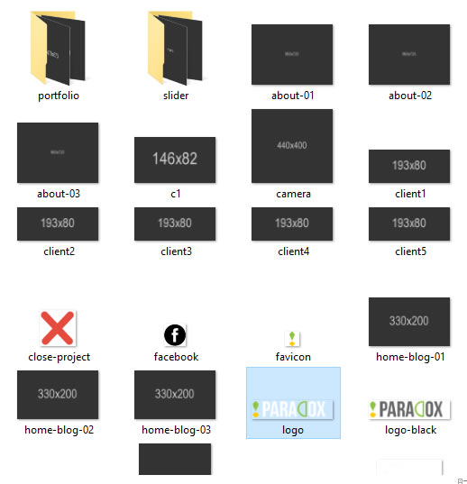
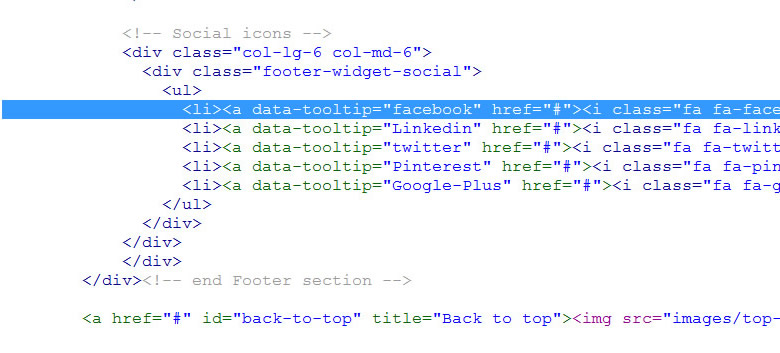
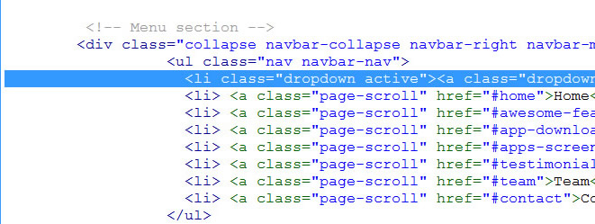
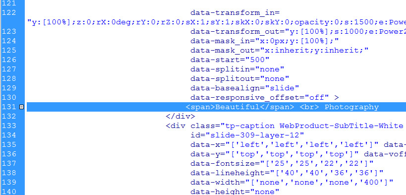
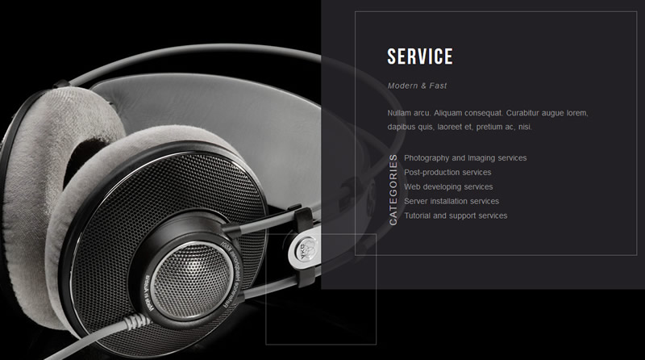
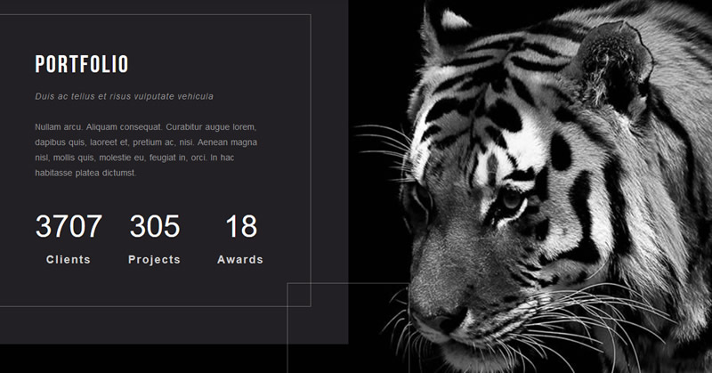
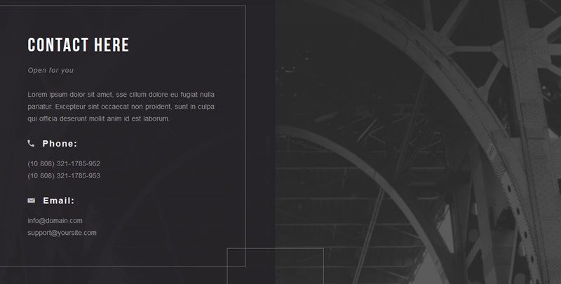
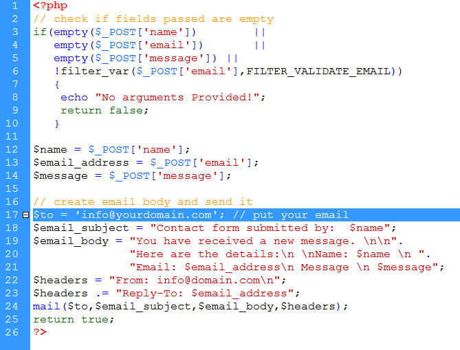

Documentation
About the Lander one-page Portfolio Template
This HTML5 Template is made with Bootstrap v 3.3.6 and it's very easy to modify it as you wish. Just follow the instructions below!
Included files
The main.zip file you have just downloaded contains the following folders:
- 1. _documentation
- 2. portfolio (it contains all the necessary files for your site)
Customizing the Template
LANDER ONE-PAGE PORTFOLIO TEMPLATE
Inside the Portfolio folder, you'll find the following folders:
- css (all the needed css files of the template)
- fonts ( the fonts used inside the template)
- images ( it contains all the pictures placeholders of the template stored inside 2 folders: bg, portfolio and slider)
- js (all the javascript files)
- mail (the php file for your form)
- index.html page
- How do i replace the site logo with my own?
Locate the images folder and replace the logo-footer.png (120 x 28 px) with your own, then upload it to your server. (see the picture below).

- How do i set my social media addresses?
Open the index.html file, go to the line 81 and put the link to your social media pages inside there (see the picture below). Then go to line 714 and do the same there

- How do i modify the menù?
Open the index.html and find the line 55 as shown in the picture below. Modify the menu and the links as you wish.

- How do i change the main slideshow pictures?
Find the slider folder, open it and replace the slide-1.jpg, slide-2.jpg, slide-3.jpg images (1500x900), slide2.jpg (1500x900) and so on....
If you want to change the text above the sliders as well, open the index.html, start from line 131 and go down in order to replace the text with your own.

- How do i change the photographer personal infos?
Open the index.html page, starting from line 281, replace the text infos with your own. Then create a jpg image (size 1500x1200px) name it bg_about.jpg put it inside the bg folder and publish everything to your server
- How do i change the "Services" section infos?
Locate the index.html page, open it and start replacing the text infos from line 351 with your own. Then create 1 image (size 1500x1200 px).
name it bg_service.jpg, copy it inside the bg folder. Upload everything to your server.

- How do i replace the "Portfolio" section images and infos?
Open the index.html page, starting from line 433 change the content with your own. Create 1 image (size 1300x1040 px), name it bg_portfolio.jpg
Then open the Portfolio folder and replace all the images inside. Name them 1.jpg, 2.jpg, 3.jpg (size 750x750) and so on. Upload everything to your server

- How do i change the address infos with my own?
Open the index.html page and go to the bottom (line 605). Replace the address infos there with your own.

- How do i change the email form in order to receive requests from my site?
Inside the main folder, find the contact.php page,, open it and replace the email address at line 23 with your own..

Further Support
For additional help and/or customization, you may contact us using the form on our profile page page
Thank you again for your purchase and don't forget to rate us!
Best Regards
Dreamcoder